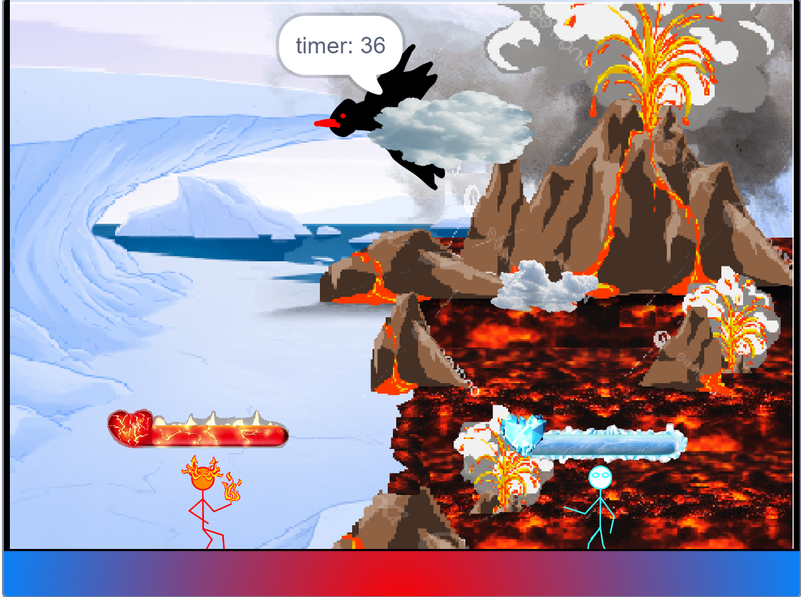
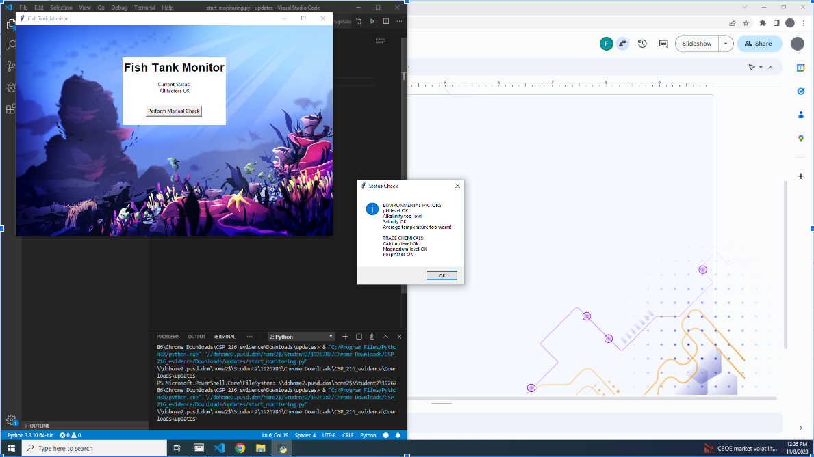

Home
Portfolio
About Me
This is my Portfolio Page!
PIZZA PROJECT
.png)
This is my pizza project. The name of the game was to enter the pizzeria, which is the image you are seeing right now. After entering you would be welcomed by a pizza making station where you would make your pizza. You would get asked questions of what toppings, chees, and sauce you wanted on your pizza. After making your pizza and going through the whole process of making the pizza you would be asked if you were done. If you were your pizza would be put into a box and a message would pop up saying goodbye and thanks.
Turtle Muncher.
.png)
This is my project for 1.2.5. This is a game where you can select the different maps or locations to play and the difficulty that you would like. In each map there is a boundry that the turtle cannot go past. If the player does reach the boundry the turtle would just bounce off the opposite way. There are bombs that randomly generate in the boundry and a peice of kelp. The name of the game is to avoid the bombs and get to the kelp before the time runs out. If you hit the bomb the game ends, if you run out of time the game ends, so the only way to win is to get to the Kelp and survive.
Scratch Game.

This is my game for the scratch project. It is a two player game in which the two players fight eachother. The two caharacter, ice and fire, have animations in al directions that they move on the screen and can shoot fire balls and ice shards at eachother. You have 60 seconds and five lives for each player. The name of the game is to get the other player to die first before the time runs out. Good Luck!
2.1.6 Project.

In this project we looked at a code that had many bugs and breaches with in it. Our job was to find the bugs and errors in the code and fix it in order to make the code safer and more accurate. The problems ended up bieng that the code either was trying to do too much or that the values that were set were reversed. There are many things we had to change that made the code more functional and ended up fixing it completely. Our recomendation for the programers responsible for this code was to spend more time organizing and prioritizing the more valuable code for the system to have better safety precautions.
Interactive Fiction Rags to Riches.

Modified bits in pictures.

Use data files to create graphs.

Using netlogo do remix of illusions.